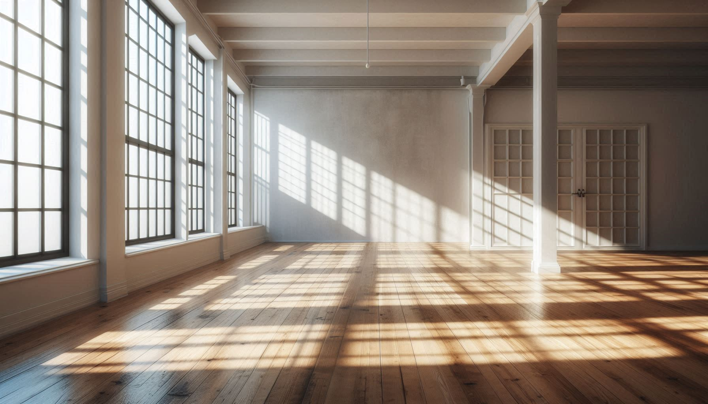

About AR 3D Models and Measurement
Our AR (Augmented Reality) 3D models allow you to preview our furniture in your own space through your mobile device. This gives you accurate spatial visualization and measurement before making a purchase.
RM Betis Furniture also offers customizable furniture to match your personal style and space requirements. Choose your preferred design, materials, and dimensions—we'll craft it just the way you want.